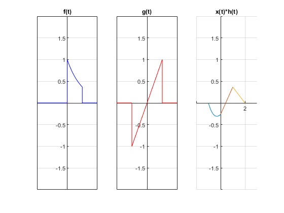

P04: Convolución y Correlación de señales.
Contents
Integrantes:
Juan Pablo Jimenez Leaños
Samuel Sánchez Duque.
Objetivo de la practica.
- Conocer métodos básicos de integración numérica.
- Manipulación de instrucciones en MATLAB.
- Simular convoluciones y correlaciones de señales continuas.
- Simular convoluciones y correlaciones de señales discretas.
1. PR04 - ejercicio 1.
Realiza la convolución de las siguientes señales.
figure subplot(1,3,1) syms t h=piecewise(t<0,0,0<t<1,exp(-t),t>1,0); fplot(h,[-2,2],'b') grid on set (gca, "xaxislocation", "origin"); set (gca, "yaxislocation", "origin"); title('f(t)') axis([-2 2 -2 2]); subplot(1,3,2) x=piecewise(t<-1,0,-1<t<1,t,1<t,0); fplot(x,[-2,2],'r') grid on set (gca, "xaxislocation", "origin"); set (gca, "yaxislocation", "origin"); title('g(t)') axis([-2 2 -2 2]); t1 = -1:0.01:0; t2 = 0:0.01:1; t3 = 1:0.01:2; subplot(1,3,3) hold on plot(t1,(t1-1)+2*exp(-t1-1)) plot(t2,exp(-1).*(2-t2)+(t2-1)) plot(t3,exp(-1)*(2-t3)) hold off grid on set (gca, "xaxislocation", "origin"); set (gca, "yaxislocation", "origin"); title('x(t)*h(t)') axis([-2 3 -2 2]); hold off
Ahora vamos a mostrarlo con el convconm.
x = @(t) t.*(t>=-1 & t<=1);
h = @(t) exp(-t).*((t>=0 & t<=1));
convconm(h,x)
hold off
2. PR05 - ejercicio e).
Realiza la autocorrelación de:
x(t) = u(t) - 2u(t-3) +u(t-4)
Utiliza las equivalencias que quieras.
f = @(t) 1.*(t>=0&t<3)+-1.*(t>=3&t<4); t = (-5:.01:5); subplot(1,3,1) plot(t,f(t)); hold on grid on axis([-1 5 -2 2]); set (gca, "xaxislocation", "origin"); set (gca, "yaxislocation", "origin"); title('x(t)'); subplot(1,3,2) plot(t,f(-t)); hold on grid on axis([-5 1 -2 2]); set (gca, "xaxislocation", "origin"); set (gca, "yaxislocation", "origin"); title('h(-t)'); t1 = -4:0.01:-3; t2 = -3:0.01:-1; t3 = -1:0.01:0; t4 = 0:0.01:1; t5 = 1:0.01:3; t6 = 3:0.01:4; subplot(1,3,3) hold on plot(t1,-t1-4) plot(t2,2+t2) plot(t3,3*t3+4) hold on plot(t4,4-3*t4) plot(t5,2-t5) plot(t6,-4+t6) hold off grid on set (gca, "xaxislocation", "origin"); set (gca, "yaxislocation", "origin"); title('x(t)*h(-t)') axis([-6 6 -5 5]); hold off
x = @(t) 1.*(t>=0&t<3)+-1.*(t>=3&t<4); h = @(t) 1.*(t<=0&t>-3)+-1.*(t<=-3&t>-4); convconm2(h,x)
3. Convolución de la señal del ejercio 3.1.1.
Convolución de la señal c) y d) de la señal 3.1.1.
n=-4:10; a=[0 -9 -6 -3 0 3 6 9 0 0 0 0 0 0 0]; b=[0 0 4 2 0 2 4 0 0 0 0 0 0 0 0 ]; convdisc([n;a],[n;b])

5. Convolución de la señal del ejercio 3.1.1 usando otro metodo.
Convolución de la señal c) y d) de la señal 3.1.1 usando el comando conv.
figure a=[0 -9 -6 -3 0 3 6 9 0 0 0 0]; b=[0 0 4 2 0 2 4 0 0 0 0 0]; cn = conv(b,a) t=(-8:14); stem(t,cn); grid on; set (gca, "xaxislocation", "origin"); set (gca, "yaxislocation", "origin"); title('Gráfica de la convolución.'); axis([-10 10 -50 50]);
cn =
Columns 1 through 13
0 0 0 -36 -42 -24 -24 -36 0 36 24 24 42
Columns 14 through 23
36 0 0 0 0 0 0 0 0 0
Modificaciones a las funciones.
Función convconm para el primer problema.
function convconm(x,h) figure (1) % Se crea una figura para hacer las gráficas dtau = 0.005; % Base de los rectangulos para realizar la integral tau = -2:dtau:2.5; % Intervalo de visualización del resultado ti = 0; % Indice para el vector de resultados tvec = -2:.1:2.5; % traslaciones de t, cuantas integrales se calulan y = NaN*zeros(1, length (tvec)); % Resultados de acuerdo a cuantos t t1 = -1:0.01:0; t2 = 0:0.01:1; t3 = 1:0.01:2; subplot(2,1,2) hold on plot(t1,(t1-1)+2*exp(-t1-1)) plot(t2,exp(-1).*(2-t2)+(t2-1)) plot(t3,exp(-1)*(2-t3)) grid on; for t = tvec, % Cantidad de traslaciones ti = ti+1; % Indice para guardar el resultado (indice del tiempo) xh = x(t-tau).*h(tau); % resultado de la multiplicación lxh = length(xh); % longitud del resultado y(ti) = sum(xh.*dtau); % Base por altura, aproximación de la integral subplot (2,1,1), % gráfica de 2 x 1 (primera) plot(tau, h(tau), 'r-', tau, x(t-tau), 'g--', t, 0, 'ob'); %graficas axis ([tau(1) tau(end) -1 1]); % límites de los ejes patch([tau(1:end-1); tau(1:end-1); tau(2:end); tau(2:end)],... [zeros(1,lxh-1);xh(1:end-1);xh(2:end);zeros(1,lxh-1)],... [.8 .8 .8], 'edgecolor', 'none'); xlabel('\tau'); % Texto del eje X legend('h(\tau)', 'x(t-\tau)','t','h(\tau)x(t-\tau)')% Caja de Texto title('Simulación'); subplot (2, 1, 2) % gráfica de 2 x 1 (segunda) plot (tvec, y, 'k', tvec (ti), y(ti), 'ok'); xlabel ('t'); ylabel ('y(t) = \int h(\tau)x(t-\tau) d\tau'); title('Convolución'); set (gca, "xaxislocation", "origin"); set (gca, "yaxislocation", "origin"); axis ([tau(1) tau(end) -1 1]); % límites del eje drawnow; % efecto de movimiento continuo end end
Función convconm para el segundo problema.
function convconm2(x,h) figure (1) % Se crea una figura para hacer las gráficas dtau = 0.005; % Base de los rectangulos para realizar la integral tau = -6:dtau:6; % Intervalo de visualización del resultado ti = 0; % Indice para el vector de resultados tvec = -6:.1:6; % traslaciones de t, cuantas integrales se calulan y = NaN*zeros(1, length (tvec)); % Resultados de acuerdo a cuantos t t1 = -4:0.01:-3; t2 = -3:0.01:-1; t3 = -1:0.01:0; t4 = 0:0.01:1; t5 = 1:0.01:3; t6 = 3:0.01:4; subplot(2,1,2) hold on plot(t1,-t1-4) plot(t2,2+t2) plot(t3,3*t3+4) plot(t4,4-3*t4) plot(t5,2-t5) plot(t6,-4+t6) grid on; for t = tvec, % Cantidad de traslaciones ti = ti+1; % Indice para guardar el resultado (indice del tiempo) xh = x(t-tau).*h(tau); % resultado de la multiplicación lxh = length(xh); % longitud del resultado y(ti) = sum(xh.*dtau); % Base por altura, aproximación de la integral subplot (2,1,1), % gráfica de 2 x 1 (primera) plot(tau, h(tau), 'r-', tau, x(t-tau), 'g--', t, 0, 'ob'); %graficas axis ([tau(1) tau(end) -2 5]); % límites de los ejes patch([tau(1:end-1); tau(1:end-1); tau(2:end); tau(2:end)],... [zeros(1,lxh-1);xh(1:end-1);xh(2:end);zeros(1,lxh-1)],... [.8 .8 .8], 'edgecolor', 'none'); xlabel('\tau'); % Texto del eje X legend('h(\tau)', 'x(t-\tau)','t','h(\tau)x(t-\tau)')% Caja de Texto title('Simulación'); subplot (2, 1, 2) % gráfica de 2 x 1 (segunda) plot (tvec, y, 'k', tvec (ti), y(ti), 'ok'); xlabel ('t'); ylabel ('y(t) = \int h(\tau)x(t-\tau) d\tau'); title('Correlación'); set (gca, "xaxislocation", "origin"); set (gca, "yaxislocation", "origin"); axis ([tau(1) tau(end) -2 5]); % límites del eje drawnow; % efecto de movimiento continuo end end
Función convdisc.
function convdisc(x1,x2) Tam1 = size(x1(1,:)); Tam2 = size(x2(1,:)); T1 = Tam1(2); T2 = Tam2(2); T3 = T1+T2-1; vec1 = zeros(1,T1+2*T2-2); vec2 = zeros(1,T1+2*T2-2); Tec2 = -(T2-1):(T1+T2-2); size(vec2); size(Tec2); x3=zeros(2,T3); x3(1,:)=0:T3-1; x3(1,:)=x3(1,:)+x1(1,1)+x2(1,1); vec1(1,T2:T2+T1-1)=x1(2,:); figure (1) hFig = figure(1); set(hFig, 'Position', [0 0 1000 1000]) filename = 'testAnimated.gif'; ttt=1; for m=0:T1+T2-2 vec2(1,1+m:T2+m)=fliplr(x2(2,:)); x3(2,m+1)=sum(vec1.*vec2); subplot(4,1,4) stem(x3(1,:),x3(2,:),'r','LineWidth',3) axis([Tec2(1),T1+2*T2-2, min(x3(2,:))-1 max(x3(2,:))+1]) ylim('auto') ylabel('f(n)*x(n)','FontWeight','bold','FontSize',16); xlabel('Convolución/Correlación','FontWeight','bold','FontSize',16); grid on set (gca, "xaxislocation", "origin"); set (gca, "yaxislocation", "origin"); subplot(4,1,1) stem(x2(1,:),x2(2,:),'k','LineWidth',3) ylabel('f[n]','FontWeight','bold','FontSize',16); grid on set (gca, "xaxislocation", "origin"); set (gca, "yaxislocation", "origin"); axis([Tec2(1),T1+2*T2-2, min(x2(2,:))-1 max(x2(2,:))+1]) ylim('auto') subplot(4,1,2) stem(x1(1,:),x1(2,:),'b','LineWidth',3) ylabel('x[n]','FontWeight','bold','FontSize',16); grid on set (gca, "xaxislocation", "origin"); set (gca, "yaxislocation", "origin"); axis([Tec2(1),T1+2*T2-2, min(x1(2,:))-1 max(x1(2,:))+1]) ylim('auto') subplot(4,1,3) stem(Tec2,vec2(1,:),'g','LineWidth',3) axis([Tec2(1),T1+2*T2-2,min(vec2)-1, max(vec2)+1 ]) ylim('auto') ylabel('Eje','FontWeight','bold','FontSize',16); grid on set (gca, "xaxislocation", "origin"); set (gca, "yaxislocation", "origin"); drawnow; pause(0.4) vec2 = zeros(1,T1+2*T2-2); frame = getframe(hFig); im = frame2im(frame); [imind,cm] = rgb2ind(im,256); % Write to the GIF File if ttt == 1 imwrite(imind,cm,filename,'gif', 'Loopcount',inf); else imwrite(imind,cm,filename,'gif','WriteMode','append'); end ttt=ttt+1; end end
Referencias
B.P. Lathi. (2018). Lynear Sistems and signals. New York : Oxford.